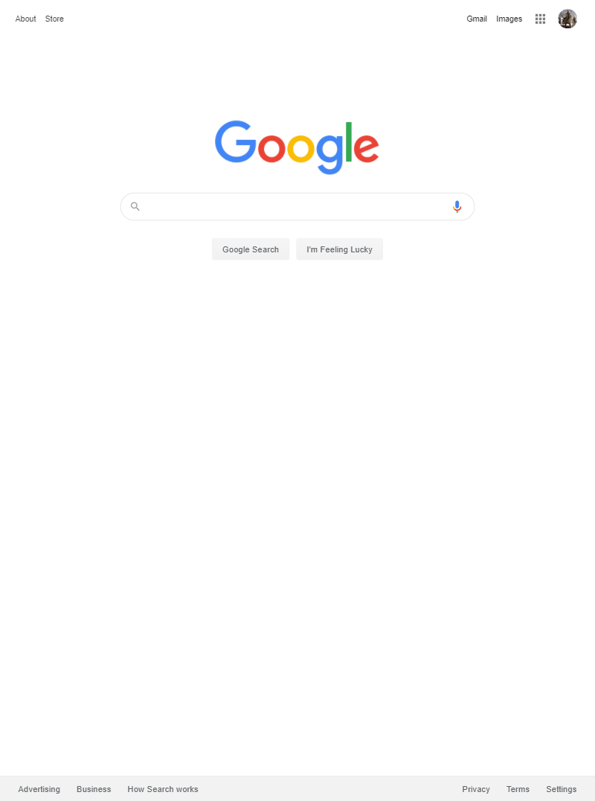
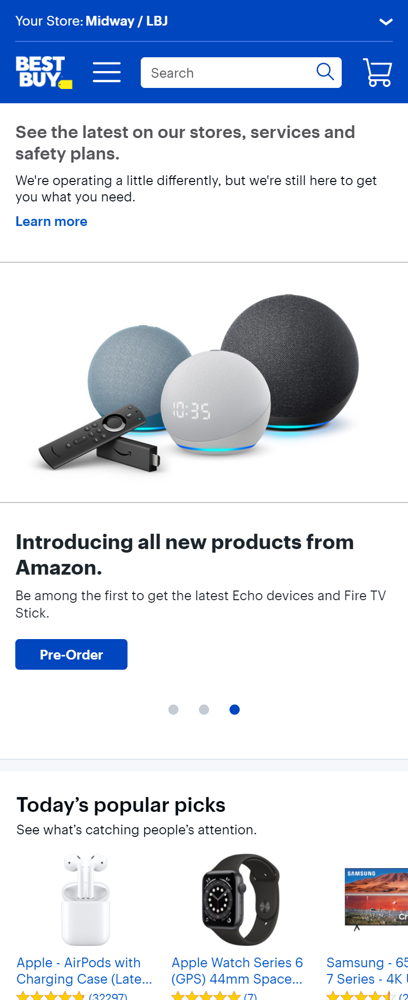

White Space and Clean Design

Google's home page is a perfect example of the usage of white space in web design. Their home page contains two things, their logo and a search bar. They know that the only reason that people are visiting that page is to search for something, so they don't bog down their page with added content to fill the page. They use the white space to convey a clean, professional look that doesn't interfere with the user experience.
Repetition
Best Buy
https://www.bestbuy.com/
Best Buy's home page is an excellent example of the importance of repetition in design. As a retailer, Best Buy offers a wide variety of products that are quite diverse. In order to tie all of these products together in a cohesive experience, they use repetition. All of the text matches and the colors used throughout the page all tie into Best Buy's color scheme. The navigation menu and the buttons all share the same blue color so that the user always feels like they are on the same site as they navigate from page to page. This concept prevents users from becoming disoriented as they browse.
Contrast
Bungie
https://www.bungie.net/The Bungie home page shows an excellent use of contrast to capture the attention of the user. The Text is all a light color to stand out against the darker background. This allows for easy readability and also conveys the message without distractions. The images used convey the message of their product without overpowering the message of the text. Contrast is a powerful tool in the process of development.